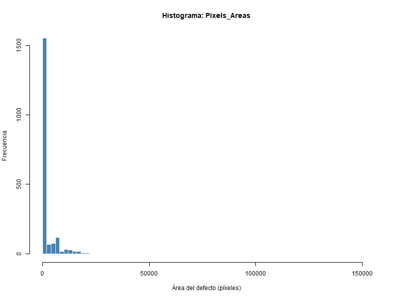
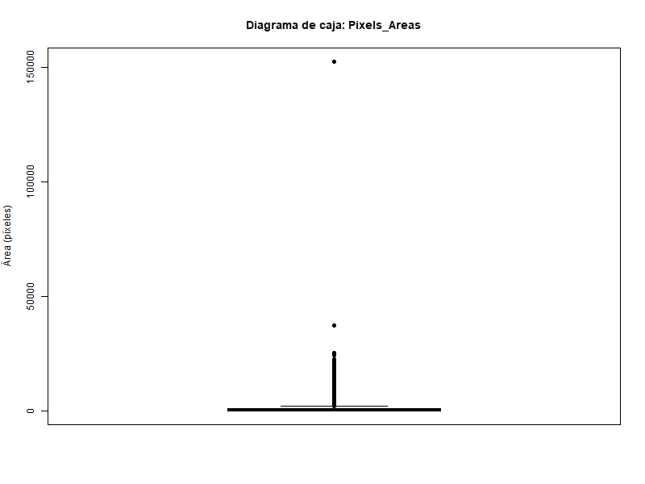
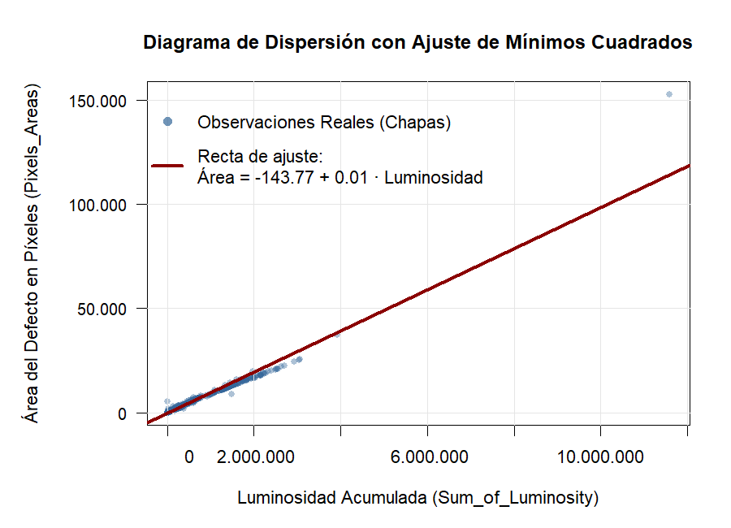

7 Análisis datos: Steel Plates Faults
7.1 Introducción a la base de datos Steel Plates Faults
El conjunto de datos Steel Plates Faults procede de un proceso real de inspección de calidad en la industria siderúrgica, en el que se identifican defectos en chapas de acero mediante sistemas automáticos de inspección. Cada observación describe un defecto detectado sobre la superficie del material mediante un conjunto robusto de 27 variables independientes de naturaleza geométrica, óptica y de material, así como la tipología del defecto detectado. El archivo de datos completo está compuesto por un total de 1,941 observaciones, proporcionando una base sólida para el análisis estadístico y el entrenamiento de modelos de clasificación en entornos industriales.
Este conjunto de datos fue donado en 2010 por la Università degli Studi del Sannio} (Italia) y se encuentra disponible públicamente en el UCI Machine Learning Repository, uno de los repositorios académicos internacionales más utilizados para el trabajo con datos reales en ingeniería y ciencia de datos. Debido a la extensión y el detalle técnico de los atributos que lo integran, y dado que en este espacio no se realiza una descripción pormenorizada de cada uno de ellos, se recomienda consultar la fuente oficial para obtener información técnica adicional sobre las variables y las metodologías de recolección empleadas: https://archive.ics.uci.edu/dataset/198/steel+plates+faults
7.2 Severidad de Fallos en Chapas de Acero
La variable Pixels\_Areas, perteneciente a la base de datos real Steel Plates Faults, mide el área del defecto detectado en una chapa de acero y puede interpretarse como una aproximación a su severidad. El objetivo de este ejemplo es describir estadísticamente el tamaño de los defectos utilizando registros reales de la industria, lo que permite extraer conclusiones directas para el control de calidad y la toma de decisiones en procesos de fabricación.
7.2.1 Medidas de posición
- Media: \(\bar{x} = 1893.88\)
- Mediana: \(Me= 174.00\)
- Moda: \(Mo = 52.00\)
- Cuartiles: \(Q_1 = 84.00\) y \(Q_3 = 822.00\)
El análisis de las medidas de centralización revela una distribución altamente asimétrica. Mientras que el valor más frecuente (Moda) y el valor central (Mediana) se sitúan en niveles bajos de severidad, la Media se desplaza significativamente hacia la derecha. Esto indica que el promedio no representa al defecto “típico”, sino que está distorsionado por una minoría de fallos de gran extensión superficial; un hecho que se corroborará analíticamente en las secciones de dispersión y forma, y se visualizará mediante la identificación de valores atípicos.
7.2.2 Medidas de dispersión
- Rango: \(Re = 152653.00\)
- Rango intercuartílico: \(RIQ = 738.00\)
- Desviación típica: \(\sigma = 5168.46\)
- Coeficiente de variación: \(CV = 2.73\)
El análisis de la dispersión muestra una variabilidad extrema en el tamaño de los defectos. El rango intercuartílico (\(RIQ\)) nos permite observar que el 50% central de los datos se mueve en un margen de apenas 738.00 píxeles, mientras que el rango total es amplio. Al ser el coeficiente de variación muy superior a la unidad (\(CV = 2.73\)), se concluye que la desviación típica es mucho mayor que la media, lo que indica que la media aritmética carece de representatividad para describir el comportamiento del proceso industrial. Esta heterogeneidad sugiere la coexistencia de dos regímenes de fallos: uno estándar de baja severidad y otro errático con valores extremos.
7.2.3 Medidas de forma
- Coeficiente de asimetría: \(\gamma_1 = 14.07\). Al ser \(\gamma_1 > 0\), indica una asimetría positiva extrema.
- Coeficiente de curtosis: \(\gamma_2 = 377.87\). Al ser \(\gamma_2 > 0\), la distribución es mucho más apuntada que la normal, es decir, es fuertemente leptocúrtica.
Los coeficientes de forma corroboran analíticamente lo observado en las secciones anteriores. La elevada asimetría positiva explica el desplazamiento de la media respecto a la mediana, mientras que la altísima curtosis refleja que la gran mayoría de los defectos son de tamaño similar y pequeño, dejando los valores de gran severidad como eventos excepcionales en las colas de la distribución.
7.2.4 Representaciones gráficas
Histograma y diagrama de caja:


A diferencia de procesos industriales con distribuciones normales, estas representaciones revelan una anomalía estructural en la severidad de los defectos. El histograma muestra una forma fuertemente leptocúrtica (\(\gamma_2 = 377.87\)) y una asimetría positiva extrema (\(\gamma_1 = 14.07\)), donde la gran masa de datos se concentra en el primer intervalo, sugiriendo que la mayoría de los fallos son de pequeña escala. Sin embargo, el diagrama de caja evidencia la presencia de observaciones críticas (outliers) que se extienden hasta los \(152,655\) píxeles, muy por encima del límite superior teórico (\(LS = Q_3 + 1.5 \cdot RI = 822 + 1.5 \cdot 738 = 1929.00\)). Esta marcada discrepancia entre la tendencia central (con una mediana de \(174.00\) frente a una media desplazada de \(1893.88\)) y los valores máximos confirma que, aunque el proceso es recurrente en defectos menores, presenta una vulnerabilidad ante eventos catastróficos aleatorios que disparan la variabilidad total del sistema.
7.2.5 Conclusiones y recomendaciones
El análisis estadístico integral de la variable Pixels\_Areas permite concluir que el proceso de fabricación de chapas de acero presenta un comportamiento dual. Por un lado, existe un control operativo eficaz sobre el 75% de la producción, ya que el tercer cuartil indica que la gran mayoría de los defectos se mantienen por debajo de los \(822.00\) píxeles. Por otro lado, la presencia de una asimetría y curtosis tan elevadas advierte de fallos críticos excepcionales que rompen la estabilidad del proceso.
Desde la perspectiva del control de calidad, se recomienda:
Investigación de Causa Raíz: Priorizar el análisis de aquellos fallos que superan el límite superior (\(LS = 1929.00\)), ya que representan eventos fuera de control que no pertenecen a la variabilidad común del sistema.
Uso de Estadísticos Robustos: Para la monitorización diaria, se debe utilizar la mediana (\(174.00\)) en lugar de la media (\(1893.88\)). Debido a la asimetría positiva extrema (\(\gamma_1 = 14.07\)), la media aritmética se encuentra fuertemente sesgada por los valores atípicos, careciendo de representatividad para describir el defecto “típico” del proceso.
Estabilización del Proceso: Centrar los esfuerzos en reducir la frecuencia de los eventos situados en la cola derecha de la distribución para disminuir tanto la dispersión global como el apuntamiento excesivo (\(\gamma_2 = 377.87\)).
7.2.6 Regresión y Correlación
La variable Pixels\_Areas, perteneciente a la base de datos real Steel Plates Faults, mide el área del defecto detectado en una chapa de acero y puede interpretarse como una aproximación a su severidad. El estudio conjunto de las características morfológicas y ópticas de los defectos permite comprender mejor la naturaleza de los fallos en la producción de chapas de acero.
El objetivo de este ejemplo es describir el comportamiento conjunto de las imperfecciones mediante técnicas bidimensionales, estableciendo un criterio estadístico riguroso para la selección de un predictor y el posterior ajuste de un modelo de regresión lineal simple.
7.2.6.1 Fase exploratoria y selección del predictor
Antes de proceder a la modelización descriptiva, se plantea evaluar la intensidad de la relación lineal entre la severidad del daño (Pixels\_Areas) y otras seis variables relevantes del proceso industrial. Al examinar los coeficientes de correlación de Pearson frente al área, se identifican tres comportamientos diferenciados:
Variables de posicionamiento y entorno: Hacen referencia a la ubicación espacial del defecto en la chapa (
X\_Minimum,X\_Maximum) y a las características de la línea de producción (Length\_of\_Conveyer, o longitud del transportador). Presentan asociaciones lineales inversas o muy débiles (\(r = -0.31\), \(r = -0.23\) y \(r = -0.16\), respectivamente), lo que sugiere que el lugar geométrico donde se origina el fallo no influye en su tamaño final.Variables geométricas de contorno: Representan las dimensiones físicas externas del defecto a través de su perímetro vertical (
Y\_Perimeter, \(r = 0.83\)) y su perímetro horizontal (X\_Perimeter, \(r = 0.97\)). Muestran una asociación directa y sólida, confirmando la relación matemática natural y predecible que existe entre el contorno de un cuerpo y su extensión superficial.Variable de respuesta óptica: Corresponde a
Sum\_of\_Luminosity, métrica que cuantifica la energía lumínica total reflejada por el defecto y captada por los sensores ópticos. Esta variable registra el grado de asociación más elevado de todo el estudio, alcanzando una correlación positiva casi perfecta de \(0.98\).
Tras analizar este escenario, se complementa el estudio preliminar mediante un test de correlación lineal para evaluar la significación del resultado obtenido. Al verificar que el p-valor asociado a la relación entre ambas variables es inferior a \(0.01\), se descarta de forma rigurosa que dicha asociación sea fruto del azar. Dada su ventaja estadística frente al resto de atributos, se selecciona la luminosidad acumulada (Sum\_of\_Luminosity) como la variable independiente definitiva (\(X\)) para el desarrollo del análisis bidimensional y el ajuste del modelo de regresión lineal simple sobre el área de los defectos (\(Y\)).
7.2.7 Medidas bidimensionales y ajuste del modelo
Una vez acotado el estudio a la relación entre la severidad del defecto y su respuesta óptica, los estadísticos descriptivos bidimensionales reportan las siguientes métricas de variabilidad conjunta y ajuste:
- Covarianza: \(S_{xy} = 2592037440.03\)
- Coeficiente de correlación lineal: \(r = 0.98\)
- Coeficiente de determinación: \(R^2 = 0.96\)
La interpretación de estos tres estadísticos revela la solidez estructural de la relación bidimensional. En primer lugar, la covarianza (\(S_{xy} = 2592037440.03\)) arroja un valor positivo extremadamente elevado debido a las magnitudes absolutas de la escala industrial del dataset, lo que constata numéricamente que ambas variables varían en el mismo sentido (asociación directa). En segundo lugar, al estandarizar esta medida mediante el coeficiente de correlación de Pearson (\(r = 0.98\)), se demuestra que dicha relación lineal no solo es directa, sino casi perfecta, situándose muy cerca del límite teórico de la unidad. Finalmente, el coeficiente de determinación (\(R^2 = 0.96\)) aporta el argumento definitivo para la validación del modelo: indica que la luminosidad acumulada es capaz de explicar por sí sola el \(96\%\) de la variabilidad total observada en el tamaño de las imperfecciones, dejando apenas un \(4\%\) de variabilidad residual asociada a otros factores aleatorios del proceso de laminado.
Para modelizar analíticamente esta tendencia media, el método de mínimos cuadrados estima los parámetros de la recta de regresión, lo que define la ecuación descriptiva del sistema como: \[ \widehat{\text{Área}} = -143.77 + 0.01 \cdot \text{Luminosidad} \]
La ecuación de la recta estimada permite cuantificar el impacto analítico de la respuesta óptica sobre la severidad del fallo. Por un lado, la pendiente (\(0.01\)) indica el factor de escala marginal del modelo: por cada unidad matemática que se incrementa la luminosidad acumulada en los sensores, el área del defecto aumenta, en promedio, \(0.01\) píxeles. Por otro lado, la ordenada en el origen (\(-143.77\)) representa el valor teórico predicho para el área cuando la luminosidad es nula; al tratarse de un valor negativo, carece de sentido físico directo y debe interpretarse estrictamente como un ajuste matemático necesario para aproximar la tendencia media en el rango real de operación, confirmando que el modelo lineal es válido solo dentro del espectro de valores observados en la planta de producción.
7.2.8 Representación gráfica bidimensional

La representación gráfica de los datos reales plasma de forma nítida la estructura del sistema, evidenciando el impacto directo de las observaciones críticas sobre el modelado. Al evaluar el diagrama de dispersión, se observa una inmensa densidad de observaciones concentradas en una mancha compacta abajo a la izquierda del gráfico, lo que representa el estándar de operación del sistema: fallos muy pequeños con baja luminosidad acumulada.
El elemento más determinante del gráfico es la violenta expansión de la escala hacia el extremo superior derecho, dictada por la existencia de un valor atípico (outlier) de magnitud extrema, el cual ejerce un fuerte efecto de arrastre sobre el cálculo de la recta de regresión.
7.2.9 Conclusiones y Recomendaciones
El análisis estadístico bidimensional integral permite concluir que el sistema de inspección presenta una firma lineal altamente predecible para la toma de decisiones. Desde la perspectiva del control de calidad, se recomienda:
Uso del Predictor Óptico para Supervisión Rápida: Dada la correlación de \(0.98\) y un \(R^2 = 0.96\), se valida técnicamente el uso operativo de la variable
Sum\_of\_Luminosity. Puede emplearse en la propia planta para estimar de inmediato la severidad superficial del daño, agilizando las alertas sin necesidad de esperar a costosos cálculos de reconstrucción geométrica en tiempo real.Tratamiento Acotado de Predicciones: La presencia del outlier crítico detectado gráficamente advierte de que el modelo debe utilizarse con fines estrictamente descriptivos dentro del rango operativo normal. No se deben realizar extrapolaciones predictivas directas en los rangos extremos sin un aislamiento previo de los fallos catastróficos.
Interpretación del Umbral Físico del Modelo: Se debe hacer hincapié en que el modelo lineal es válido únicamente dentro del rango de operación real de la planta. El hecho de obtener una ordenada en el origen negativa (\(-143.77\)) recuerda analíticamente que no se deben realizar estimaciones numéricas cerca de la luminosidad nula, ya que el modelo carece de sentido físico en esa región.